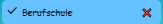

Hilfe
1. Menü öffnen

Drücken Sie auf die Oberfläche "Menü" um das Seitenmenü zu öffnen.
2. Menüoptionen auswählen

Drücken Sie auf die jeweiligen Menüoptionen, um zu den gewünschten Seiten zu gelangen.
3. Aufgaben hinzufügen

Drücken Sie auf das "+" unten rechts und wählen Sie die gewünschten Informationen aus. Klicken Sie anschliessend auf die Schaltfläsche "Hinzufügen", um eine neue Aufgabe zu erstellen.
4. Aufgabe abhaken
Wenn die Aufgabe erledigt wurde, kann sie durch einfaches Klicken auf die Aufgabe abgehakt werden.
5. Aufgabe löschen

Um eine Aufgabe zu löschen, klicken Sie auf das rote Kreuz.